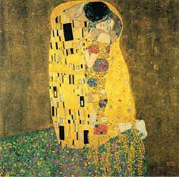

128. The Kiss. Gustav Klimt. 1907- 1908 CE Oil and gold leaf on canvas
- Form
- Little of the human form is actually seen: two heads four hands, two feet
- The bodies are suggested under a sea of richly designed patterning
- The work is spaced in an indeterminate location against a flattened background
- Content
- The male figure is composed of large rectangular boxes; the female figure is composed of circular forms
- The work suggests all-consuming love; passion; eroticism
- The use of gold lead is reminiscent of Byzantine mosaics
- The work is influenced by gold applied to medieval illuminated manuscripts
- Part of a movement called the Vienna Succession, which broke away from academic training in schools at that time.